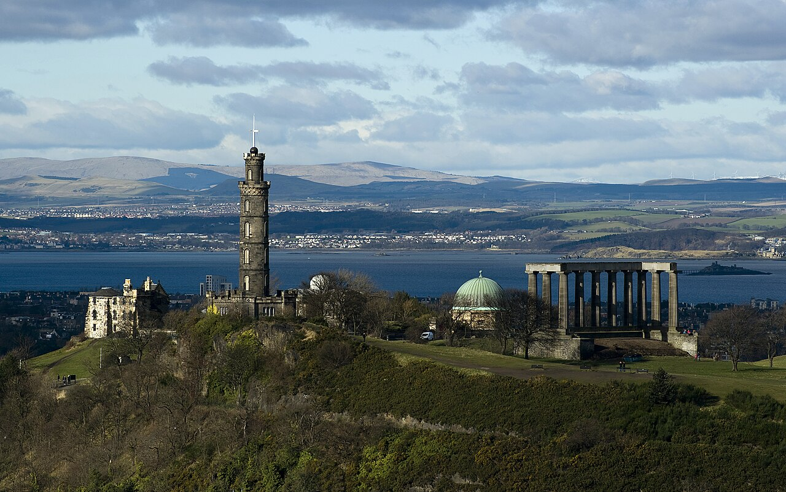

🗺️ Abrir circuito del día en Google Maps →
La premisa del día
Aterrizamos cansados pero “le metemos”. Lo primero es orientarse desde arriba: una subida corta a Calton Hill da la mejor vista de la ciudad en 15 minutos y ordena el resto de la semana mentalmente. Después bajamos por Princes Street, miramos el castillo desde el lado fácil (sin entrar todavía — el viernes es el día) y cerramos con un pub Victoriano clásico.
Por confirmar: hora exacta de llegada del vuelo 1448 (GRU → EDI). Asumimos llegada matinal o de mediodía.
Itinerario
~Llegada Aeropuerto Edinburgh (EDI) — Migraciones del UK, puede llevar 45 min. Tener pasaporte y el e-Visa/ETA listos si aplica. Comprar SIM o eSIM acá si nadie tiene plan internacional (Three UK o EE tienen quioscos).
+30 min Tranvía al centro (Edinburgh Trams). Linea única que pasa cada 8-10 minutos. Bajar en St Andrew Square: £7.50 ida (tarjeta contactless funciona como ticket — tap on, tap off). Hay buses Lothian Airlink 100 si los trams están saturados.
+1h15 Premier Inn Princes Street — check-in oficial es 14:00, pero suelen guardar valijas en bag-storage si llegás antes. Ducha rápida y a la calle: el truco con el jet lag es no recostarse.
Tarde Calton Hill esotérico romántico — subida de 15 min, 100 m de desnivel, escaleras suaves. Arriba: el National Monument (las “columnas inacabadas” — Edimburgo se hizo llamar la Atenas del Norte y empezó una réplica del Partenón en 1822 que nunca terminaron por falta de plata), el Nelson Monument (subible, £8 — vista panorámica) y el Dugald Stewart Monument (la postal de Edimburgo que ves en Instagram). Tiempo: 45-60 min.
+1h Princes Street Gardens — bajada por los jardines hacia el oeste, mirando el castillo del otro lado del valle. El valle era un lago artificial drenado en el s. XIX. En el camino: Scott Monument museo, la torre gótica victoriana más alta dedicada a un escritor en el mundo (Sir Walter Scott). Subible por £8, 287 escalones angostos. Si quedan piernas, subir.
Cena Café Royal Circle Bar pub comida (West Register St, a 2 cuadras del hotel). Pub Victoriano de 1862, techo abovedado, murales art-nouveau con inventores escoceses (Watt, Faraday, Caxton), barra ovalada de mármol. Especialidad: ostras frescas (10-12 por £15-20) y un fish & chips o un steak pie honesto. Cask ale recomendado: una pinta de Caledonian 80/-. Alternativa al lado: The Guildford Arms, techo altísimo, más cask ale, menos turistas.
Noche Opcional según pilas: una ronda de whisky en el Bow Bar (~10 min caminando, 400 whiskies, sin música, sin tele, solo conversación) o tour de fantasmas por los Edinburgh Vaults (~£15, 1h — si quieren empezar el track esotérico desde el día 1).
23:00 A dormir — mañana es Old Town día completo y conviene madrugar para Mary King’s Close antes que se llene.
Material para leer mientras subís a Calton Hill
Por qué la “Atenas del Norte”
A finales del s. XVIII, Edimburgo era el epicentro intelectual de Europa. La Ilustración Escocesa (más sobre eso) tenía a David Hume, Adam Smith, James Hutton (padre de la geología moderna), Joseph Black (descubridor del CO₂), James Watt (la máquina de vapor — tecnicamente trabajaba en Glasgow pero se formó acá). En 1822, después de las guerras napoleónicas, la ciudad votó construir una réplica del Partenón en Calton Hill como memorial nacional a los caídos. Pusieron las 12 columnas y se quedaron sin plata: el National Monument quedó inconcluso para siempre. Lo llaman cariñosamente “Edinburgh’s Disgrace” (la vergüenza de Edimburgo). Es la cosa más Atenas-del-Norte que existe: aspiración ilustrada + bancarrota.
El Dugald Stewart Monument
Es la cúpula sobre columnas que ves en todas las postales del atardecer. Dugald Stewart fue un filósofo del s. XVIII de la Common Sense School escocesa, fundamental en su época, hoy casi olvidado. El monumento de 1831 está hecho por William Henry Playfair (el arquitecto que diseñó la mayor parte de la New Town). Es palladiano-helénico: una peripteros circular sobre un peñasco volcánico. Funciona como reloj de sol del atardecer.
Pro tip: el atardecer en Calton Hill en mayo es a eso de las 21:00. Si llegan al monumento a las 20:30, tienen la luz cálida y la ciudad dorada por debajo. Llevar una buena campera porque pega frío arriba.
Si llueve
Saltar el Scott Monument y meterse al National Museum of Scotland (gratis, abre hasta las 17:00) o al Scotch Whisky Experience (Royal Mile, edificio cubierto). El plan de cena en pub no cambia.
Comer y tomar hoy
Café Royal Circle Bar
17 West Register Street · Victoriano · ostras + cask ale + bocata victoriana.The Guildford Arms
1 West Register Street · al lado del Café Royal, mismo grupo · techos altísimos.Bow Bar
80 West Bow · whisky bar honesto, sin tele · ~400 whiskies escoceses.Logística
- Costo aproximado del día (sin alojamiento): tranvía £7.50 × 2 + Scott Monument £8 (opcional) + cena £30-40 c/u + ronda whisky £8-12 = ~£60-80 por persona.
- Caminata estimada: 4-6 km (Calton Hill + Princes St + ida y vuelta al hotel + pub).
- Calzado: zapatillas o botas livianas. Las escaleras de Calton Hill mojadas resbalan.